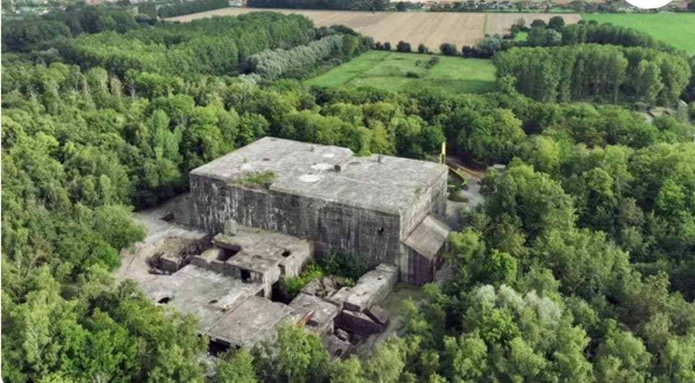
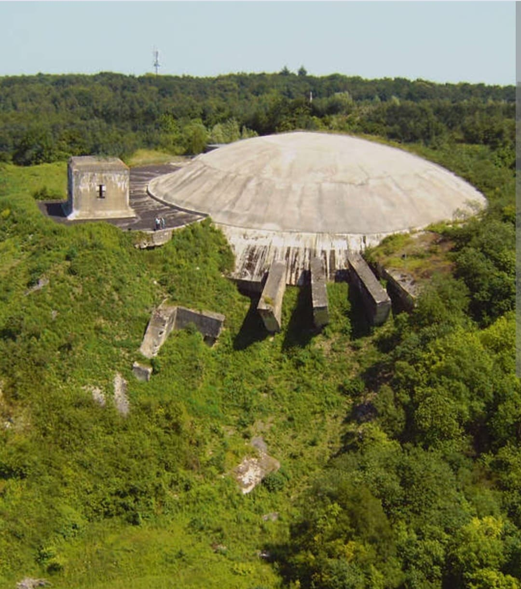
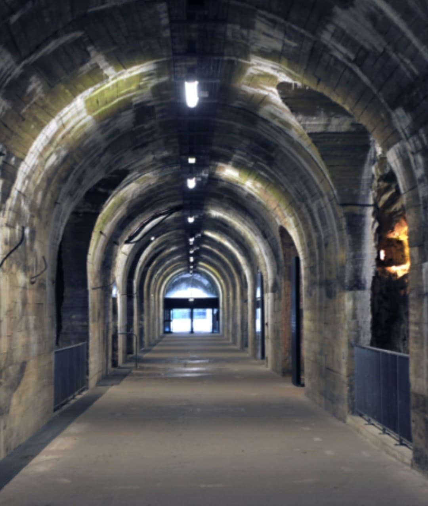

Éperlecques et La Coupole sont les deux sites majeurs du programme V1/V2 dans le Nord de la France. Conçus par l’Allemagne nazie en 1943–1944, ils devaient produire, armer et lancer les fusées V2 vers Londres. Ensemble, ils forment un système complet : usine, armement, tunnels, dôme, rampes et zones techniques.
Le Blockhaus d’Éperlecques est un immense complexe de béton destiné à la production des fusées V2. Il devait également servir de rampe de lancement verticale. Avec plus de 90 000 tonnes de béton, c’est l’un des plus grands blockhaus d’Europe.
Bombardé massivement par l’aviation alliée (Opération Crossbow), le site ne sera jamais opérationnel. Les Allemands déplacent alors la production vers Dora-Mittelbau.

La Coupole, située à Helfaut, est un dôme de béton de 5 mètres d’épaisseur couvrant un vaste réseau de tunnels. Les V2 arrivaient ici déjà construits : le site servait à les armer, les préparer et les mettre en position de tir.
Comme Éperlecques, La Coupole est neutralisée par les bombardements alliés avant d’être opérationnelle. Aujourd’hui, c’est un musée majeur consacré aux armes secrètes allemandes et à la déportation.

Sous le dôme, un réseau de galeries permettait de stocker, armer et préparer les fusées. Ces tunnels étaient conçus pour résister aux bombardements et assurer un fonctionnement continu.

Éperlecques et La Coupole ne sont pas identiques : ils se complètent.
Ensemble, ils devaient former une chaîne complète pour frapper Londres avec les fusées V2.